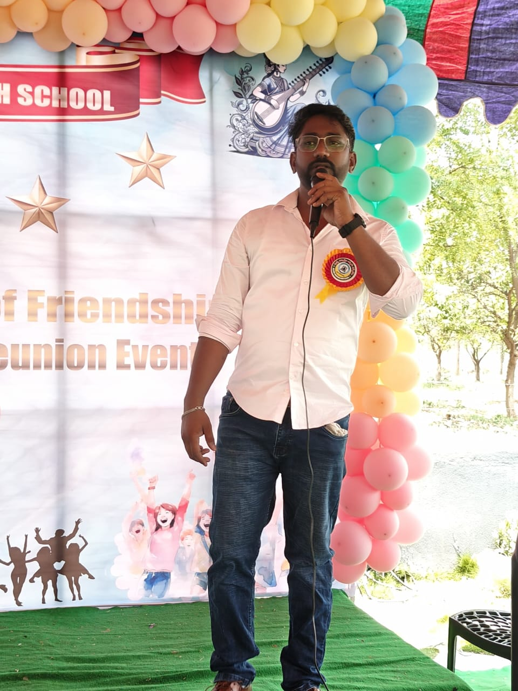
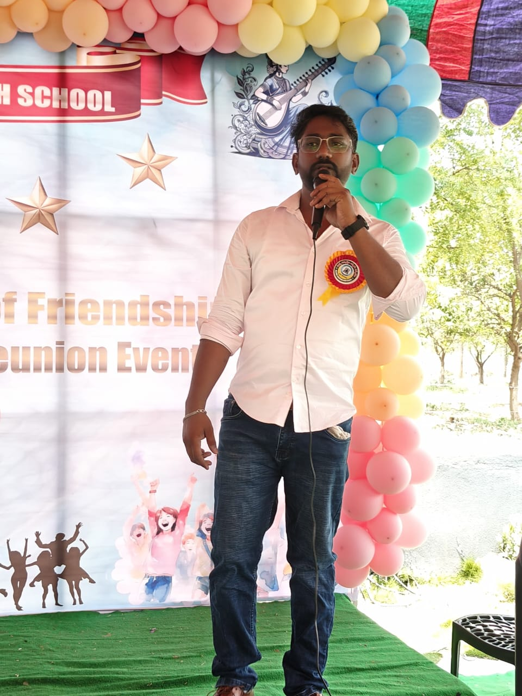

About Satish
Chandra
-I am an individual hailing from Hyderabad, known for my preference for a close-knit circle of friends, and my dedication to being a loving husband and father of two children. -In the world of entertainment, I hold a deep appreciation for actors such as Mahesh Babu, Dhanush, and Akshay Kumar, .
Address Amberpet, Hyderabad-India
Email onlysonofanuradha@gmail.com
View All ProjectsMy Skills
Technical Support
- -Profound knowledge of Operating Systems.
- -Hardware Troubleshooting and Maintenance.
- -Remote Support and IT Infrastructure Support.
- -Software Installation and Configuration.
- -Knowledge of Virtualization and Cloud Computing Technologies.
- -Cybersecurity Awareness and Best Practices.
Leadership
- -Leading a team in achieving high-performance standards.
- -Adapting to Evolving Technology and Business Environments.
- -Mentoring Team members and provided Regular Feedback and Coaching.
- -Fostering a Supportive and Inclusive Work Environment.
Communication
- -Effective Communication and Active listening skills.
- -Detailed Documentation of knowledge sharing and process improvement.
- -Proficient in vendor Relationships, Negotiating Contracts, and Procurement Processes.
My Experience


All Projects
20-Year School Reunion Event (2025)
- - Organized and hosted a nostalgic 20-year reunion reuniting classmates, spouses, and children.
- - Created a professional invitation video using DaVinci Resolve.
- - designed banners and welcome boards using CorelDraw.
- - Managed outreach, coordination, and on-site execution for the event.
- - Honored for leadership and dedication in organizing the event.
- - Covered in a local newspaper for its remarkable execution and turnout.
📸 Event Gallery


 


🎬 Invitation Video
Global Dropship and WFH Support for Google Client from July 2020 to April 2022
- -To enable Google employees worldwide to seamlessly transition to remote work during the challenging circumstances brought about by the COVID-19 pandemic.
- - Hardware Procurement and Shipment Management: This involved receiving and processing hardware requests from Google employees. Upon receiving these requests, we coordinated with our suppliers to ensure the timely delivery of the requested hardware directly to the employees' addresses. The hardware included laptops, desktops, accessories, and more.
- - Configuration and Deployment: Once the hardware was delivered, my team and I took charge of configuring these devices. Our aim was to ensure that each employee could access Google's internal tools and resources from their remote location. This involved setting up secure connections and software configurations to replicate the in-office experience.
- - New Hire Onboarding: During April 2020, we played a crucial role in the onboarding process for new Google hires. This encompassed hardware deployment, software setup, and providing comprehensive IT support to ensure a smooth transition into the Google ecosystem.
- - I had the privilege of leading the Indian team, which consisted of 7 highly skilled IT professionals. This leadership role was bestowed upon me as the first member to join this initiative. Our collaborative efforts were an integral part of Google's Extended Management Team (EMT), an essential component of Google LLC's operations.
Description
Google Business Continuity Plan (BCP) Implementation from March 2020 to June 2020
- - To swiftly enable remote work for Google India employees in response to the COVID-19 pandemic and impending national lockdown.
- - Led a team of 11 engineers as the team needed to enroll 1400 Chromebooks, update inventory details in ServiceNow (serial numbers, asset tags, WLAN), configure the devices, and deploy them to users within a tight deadline of just 2 days.
- - Successfully accomplished the task, ensuring that Google employees had the necessary hardware and infrastructure to work from home during the India Lockdown.
- -This project played a critical role in maintaining business continuity for Google India during the pandemic, allowing employees to work remotely and ensuring minimal disruptions.
Description
Google Hyderabad New Office Setup
- To set up and establish the IT infrastructure at Several Google's new Offices in Hyderabad, India.
- - Hardware Procurement: Managed the collection and receipt of a diverse range of hardware, including Chromebooks, Chromeboxes, Windows laptops, Linux laptops, and computer accessories, which were procured by Google.
- - Successfully established the IT infrastructure for the new sites, ensuring a smooth transition and efficient operations.
- - Inventory Management: Updated the configuration details of the received hardware into the inventory management tool (ServiceNow), ensuring accurate and up-to-date records.
- - IT Inventory Room Setup: Designed, arranged, and maintained the IT hardware within the IT inventory room, following clean room policies and clear desk policies for organized and secure storage.
- - Hardware Deployment: Deployed hardware to various teams within the new site based on their specific requests and requirements, adhering to designated deadlines and ensuring seamless operations.
Description
IKS Health New Office Infrastructure Setup April 2015 to July 2015
- - To establish the IT infrastructure and support continued production during the setup of IKS Health's new site.
- - Hub Room Setup: Designed and configured the hub room, including network cabling and L2 switch configuration, involving tasks such as VLAN creation to optimize network performance.
- - Hardware Procurement: Managed the collection and receipt of a diverse range of hardware, including Thin Clients, Windows Desktops and computer accessories, which were procured by IKS Health.
- - Inventory Management: Updated the configuration details of the received hardware into the inventory management tool (Excel), ensuring accurate and up-to-date records
- - IT Inventory Room Setup: Designed, arranged, and maintained the IT hardware within the IT inventory room, following clean room policies and clear desk policies for organized and secure storage.
- - Hardware Deployment: Deployed hardware to various teams within the new site based on their specific requests and requirements, adhering to designated deadlines and ensuring seamless operations.
- - Client Project Support: Participated in the First Day of Business (FDOB) of client projects to ensure a smooth transition and collaboration between the IT department and project teams
- - Blade Server Deployment: Participated in Installation and configuration of blade servers, along with creating a file server using Hyper-V in Windows Server 2012, ensuring efficient data storage and retrieval.
- - Incubation Center: Established an incubation center within the new site to facilitate uninterrupted production while the site's IT infrastructure was under development, thus minimizing downtime.
Description
This Page
Development of This Website
What: A Portfolio Website which shows my Skills and Experience.
-Why: Upon seeing a Portfolio website that inspired me. Hence, I decided to embark on creating my own and I brought my vision to life.
-How: I developed this page using HTML, CSS and JavaScript. -With the help of educational resources like YouTube videos and the assistance of ChatGPT.
-Where: After completing the development process, I utilized GitHub Pages to publish the website, making it accessible to anyone interested in exploring my work and experiences.